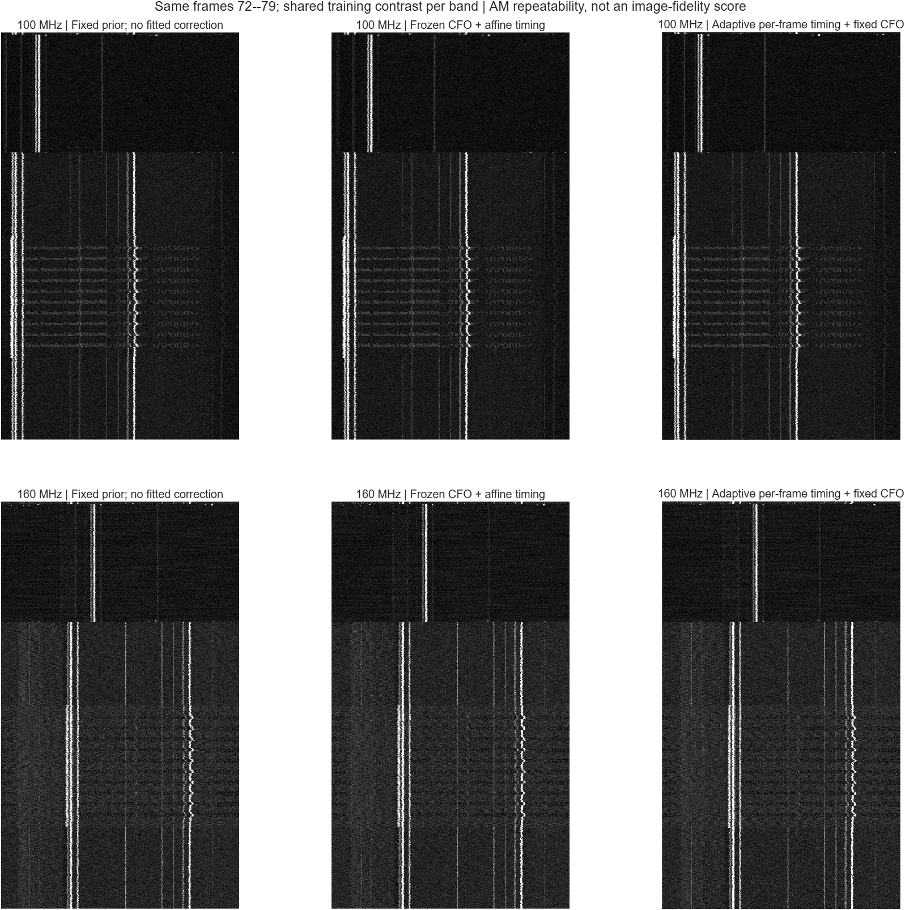

2026-10-26 · 실제 MATLAB R2026b 실행 · iPhone 6 / 100 + 160 MHz
CFO와 시간축을 분리해서 보정한 결과
Signal Processing Toolbox·Wavelet Toolbox 설치 및 실제 함수 실행 완료. AM 반복 위치의 정렬은 개선됐지만, 화면 신호의 coherent RF stitching 성공은 확인되지 않았습니다.
row 후보8.865 µs약 112.8026 kHz
상대 CFO 후보+712.643 Hz160 MHz 수신본 → 100 MHz 기준
추적 후 row 잔차0.029 / 0.041100 / 160 MHz · raster samples
평가 프레임72–79훈련 0–7 · 각 8프레임
HS 패킷은 디코딩하지 않았습니다. 1881×1100 분석 격자에서 추적한 row 반복 후보입니다. 추적 후 잔차는 같은 프레임의 AM 위치로 보정한 뒤 다시 측정한 값이며 독립적인 복원 정확도 지표가 아닙니다.
원본과 복원 화면
모든 비교는 같은 8프레임입니다. AM 그림의 대비는 해당 대역의 보정 전 훈련 자료로 고정했습니다. 원본 캡처는 시각적 참고이며 파형 생성·복원 입력에 사용하지 않았습니다.

같은 평가 프레임: 고정 주기 → CFO+affine 시간축 → 프레임별 AM 시간 추적. 반복성 개선과 글자 복원도를 구분합니다. 4조건의 AM 화면과 LR8 stitching 시도. 파형 정합이 충분하지 않아 글자 복원 개선으로 판정하지 않습니다.
4조건의 AM 화면과 LR8 stitching 시도. 파형 정합이 충분하지 않아 글자 복원 개선으로 판정하지 않습니다.
CFO와 위상
복소 원본의 절대 sample time에 CFO 회전을 먼저 적용한 뒤, AM 위치에서 구한 시간축으로 fractional resampling했습니다. 각 그림의 최초 위상 0은 표시 기준이며 절대 RF 위상이나 복원 RGB를 뜻하지 않습니다.
 훈련에서 고정한 CFO를 적용한 위상 궤적. 초반 불연속과 잔여 위상은 남습니다.
훈련에서 고정한 CFO를 적용한 위상 궤적. 초반 불연속과 잔여 위상은 남습니다.
같은 후반 프레임 72의 TF 비교
STFT: 8.142 µs window, ENBW 184.226 kHz. 좁은 대역은 AA FIR 후 1/16 decimation, 7.860317 MS/s. FSST: 32.569 µs window, FFT 간격 30.704 kHz. 이 설정으로 713 Hz CFO 변화를 눈으로 분해할 수 없으므로 CFO는 위상 기울기로 별도 평가했습니다. TF 색상은 각 변환 안에서 공통이며 STFT PSD와 FSST/CWT 크기의 단위는 다릅니다.

100 + 160 MHz stitching 검증
| 조건 | 평가 coherence | 강한 bin 주변 마스크 후 |
|---|
| 고정 모델, 단일 프레임 | 0.282 | 0.043 |
| 고정 모델, 8프레임 복소 평균 | 0.122 | 0.019 |
| 적응 시간 추적, 8프레임 복소 평균 | 0.260 | 0.030 |
검사 구간은 사전 지정한 103–109 MHz입니다. 적응 추적의 잔여 위상은 −3.062 rad로 거의 반대 위상이며, competing peak ratio도 0.996입니다. coherence의 크기만으로 합성 성공을 판단할 수 없습니다.
MATLAB Butterworth 4차 SOS + filtfilt로 유효 LR8을 적용했습니다. 합성률 약 503.060281 MS/s, 교차점 약 90 MHz(이동된 격자 기준), LP+HP 상보 응답 오차 2.56×10⁻¹⁵. m[i] blanking mask는 DSI blanking 위치가 확인되지 않아 사용하지 않았습니다.
 단일 프레임과 8프레임 평균 대조. 평균은 신호 반복 위상이 맞을 때만 이득을 줍니다.
단일 프레임과 8프레임 평균 대조. 평균은 신호 반복 위상이 맞을 때만 이득을 줍니다.